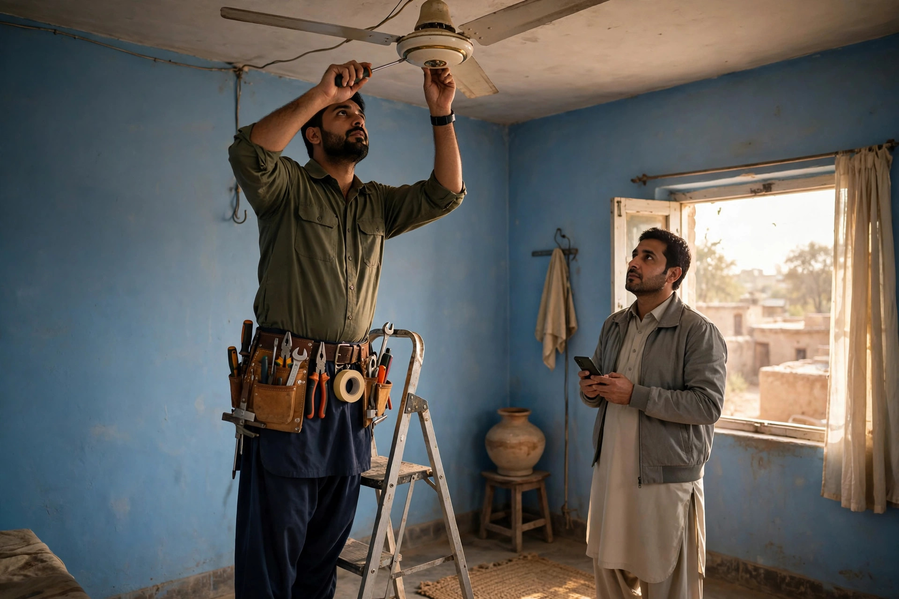

A cloth shop can wait for a customer’s free afternoon. A workshop cannot. The work of Chowk Azam’s mechanics, electricians, plumbers, tyre shops, welders and repair services arrives as problems, often urgent, often from people who have never used the business before. A vehicle fails on the Multan to Mianwali road. A tube well stops in a critical week. A generator dies during load shedding. In each case the customer’s next move is the same: a phone search, a glance at hours and reviews, and a call to whoever looks able and open.
SEO for services is therefore about readiness for moments you cannot schedule. This article covers the profile details that matter in emergencies, how to list services so Google matches you to the right breakdowns, honest handling of hours and call-outs, and the review habits that make a stranger trust you with his vehicle or his crop. Zaheer Seo Expert is based in Layyah and supports Chowk Azam workshops online and by phone, which suits trades that cannot leave a job to visit an office.
The Emergency Search: What the Customer Sees
Put yourself in the driver’s seat: stranded near Chowk Azam, light failing, passengers waiting. The search is short, a trade plus the town, or simply near me. The results are judged in seconds. Is it open now? How far? What do the reviews say about honesty and speed? Is there a phone number that connects immediately? The workshop chosen is rarely the cheapest or the largest; it is the one that answered those questions best on a small screen.
Every recommendation in this article flows from that scene. Your profile is not decoration; it is your bid for urgent work, written in advance. The fuller local picture, including how profiles interact with maps results, is set out in our guide to Google Maps for Chowk Azam businesses, which workshops should read alongside this one.

Listing Services So the Right Jobs Find You
A profile that says only auto workshop wastes its best asset. List the services you actually provide, in the words customers use: engine work, punctures and tyres, battery problems, tractor repair, pump and motor rewinding, welding, AC and cooler repair, whatever your trade genuinely covers. Each true service is another breakdown for which Google can consider you, and another reason for a searcher to call you rather than a generalist.
Accuracy is the boundary. Listing services you do not offer brings calls you must refuse and reviews you do not want. If a job is seasonal, such as harvest machinery work, update the listing as seasons change. On a website, give major services their own sections with the same plain naming. This approach is part of the wider SEO services in Chowk Azam that we provide for local trades from our Layyah base.
- Name every genuine service in customer language
- Separate emergency services from routine work
- Remove services you no longer offer
- Update listings for seasonal work
Hours, Call-Outs and the Phone
For services, hours are a promise under pressure. If your profile says open and the shutter is down, the stranded customer remembers, and sometimes reviews. Keep hours truthful, show your real closing time, and if you offer emergency call-outs beyond hours, describe the arrangement plainly rather than claiming to be open around the clock when you are not. Honest information filters calls to the ones you can serve well.
Then answer the phone. In urgent trade, a missed call is a lost job within a minute, because the customer dials the next listing. Keep the business number charged, audible over workshop noise where possible, and returned quickly when a call is missed during a job. These unglamorous habits decide more service work in Chowk Azam than any technical SEO trick.
Reviews in the Repair Trade
Repair customers review emotionally, because breakdowns are stressful and honesty is hard for a layman to judge. That is exactly why your reviews matter so much to the next stranger: a pattern of comments about fair charging, clear explanation and work finished when promised is the strongest reassurance a workshop can show. Encourage reviews after successful urgent jobs in particular, once the relief has settled and the customer is back on the road.
When a review complains about price, reply with calm specifics about what the job involved, without mocking the customer’s knowledge. Future readers, especially vehicle owners, understand that good parts and careful work cost money, and a composed reply often reads as the mark of a serious workshop. Our detailed article on Google reviews for Chowk Azam businesses covers asking and replying in full.
Reaching Beyond the Town Boundary
Service work travels. Farmers bring machines in from surrounding villages, and roadside workshops serve drivers whose home towns are districts away. Your profile’s service area should honestly cover the villages you will actually go out to or accept work from, and your descriptions can name the road and areas you serve, since travellers think in routes, not boundaries.
Photographs help here too: the workshop with its board visible from the road, the ramp and tools, vehicles under repair, and your team at work. A driver deciding where to be towed wants to see a real, equipped place. Pictures taken on an ordinary working day, cleaned up but not staged, do this better than any stock image.

Keeping It Maintained on a Working Schedule
Workshops run on jobs, not marketing calendars, so upkeep must be small and fixed: a few minutes weekly to reply to reviews, a monthly check of hours, services and photos, and updates whenever the trade changes, a new machine bought, a service added, a partner’s number retired. Assign it to one person, as you would assign locking up, or it will drift.
Where even that is hard in peak season, the maintenance can be handled remotely. Zaheer Seo Expert, based in Layyah with no Chowk Azam office, keeps profiles and pages in order for local trades online and by phone, reporting in plain language. The goal is simple: when the next breakdown happens near Chowk Azam, your workshop is the one the phone recommends and the customer trusts.
Frequently Asked Questions
What is the most important profile detail for a workshop?
Accurate opening hours combined with a phone number that is answered. Urgent customers choose from whoever appears open and reachable in that moment. A complete service list and good reviews come next, and all four together win the call.
Should I list every repair I have ever done?
No. List the services you genuinely offer now, in the words customers use for them. An accurate list matches you to jobs you can do well, while an inflated list brings refusals, wasted calls and poor reviews.
We offer emergency call-outs but are not open all night. How should the profile read?
Show your real workshop hours, and describe the call-out arrangement in your description, for example that emergency calls are taken by phone after hours. Claiming to be open when the workshop is shut misleads stranded customers and damages trust.
Can SEO bring a workshop work from outside Chowk Azam?
Yes. Travellers on the main road and farmers in surrounding villages search exactly as locals do. An honest service area, route-aware descriptions and strong reviews put your workshop in front of those searches as well.
Want More Customers From Google?
Call 0327 7350830 or email seozaheer14@gmail.com. Zaheer Seo Expert, Layyah - Rajan Shah Road, Rana Nagar, Chak 116 TDA, Pakistan. Open 24 hours.
Get Your SEO Strategy →